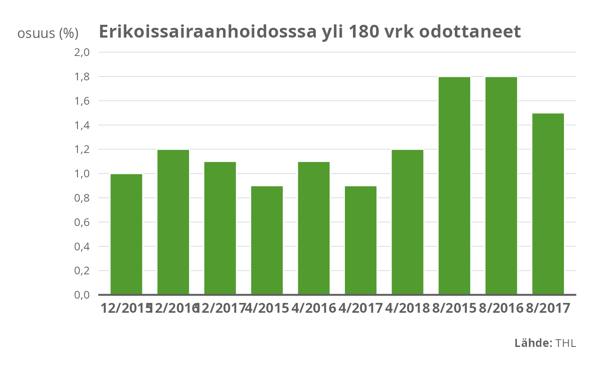

geom_col()geom_col_thl.RdWrapper provides better defaults to match with graphical guidelines. Defaults affect to parameters: color and width.
geom_col_thl(
mapping = NULL,
data = NULL,
position = "stack",
...,
width = 0.7,
na.rm = FALSE,
show.legend = NA,
inherit.aes = TRUE,
colour = "white"
)
geom_bar_thl(
mapping = NULL,
data = NULL,
stat = "count",
position = "stack",
...,
width = 0.7,
na.rm = FALSE,
show.legend = NA,
inherit.aes = TRUE
)Set of aesthetic mappings created by aes() or
aes_(). If specified and inherit.aes = TRUE (the
default), it is combined with the default mapping at the top level of the
plot. You must supply mapping if there is no plot mapping.
The data to be displayed in this layer. There are three options:
If NULL, the default, the data is inherited from the plot
data as specified in the call to ggplot().
A data.frame, or other object, will override the plot
data. All objects will be fortified to produce a data frame. See
fortify() for which variables will be created.
A function will be called with a single argument,
the plot data. The return value must be a data.frame, and
will be used as the layer data. A function can be created
from a formula (e.g. ~ head(.x, 10)).
Position adjustment, either as a string, or the result of a call to a position adjustment function.
Other arguments passed on to layer(). These are
often aesthetics, used to set an aesthetic to a fixed value, like
colour = "red" or size = 3. They may also be parameters
to the paired geom/stat.
Bar width. The gap should be between 30% and 50% of the bar's width. Formula: gap_pct = (1 - width) / width, therefore: width = 1 / (1 + gap_pct). Thus width parameter should be between 0.667 and 0.769.
If FALSE, the default, missing values are removed with
a warning. If TRUE, missing values are silently removed.
logical. Should this layer be included in the legends?
NA, the default, includes if any aesthetics are mapped.
FALSE never includes, and TRUE always includes.
It can also be a named logical vector to finely select the aesthetics to
display.
If FALSE, overrides the default aesthetics,
rather than combining with them. This is most useful for helper functions
that define both data and aesthetics and shouldn't inherit behaviour from
the default plot specification, e.g. borders().
Border colour of bars. Defaults to "white".
Override the default connection between geom_bar() and
stat_count().
Uses white border for and gap width between bars is 42\
Use parameter size to change border into smaller.
geom_col() and geom_bar()
data(yli180)
# Minimal plot built from thlGraphs elements
ggplot(yli180, aes(kk, pros)) +
geom_col_thl(fill = colors_thl("dark.green")) +
scale_y_continuous_thl(limits = c(0,2)) +
theme_thl() +
labs(title = "Erikoissairaanhoidosssa yli 180 vrk odottaneet",
y = "osuus (%)", x = "",
caption = c(expression(paste(bold("Lähde:"), " THL"))))
